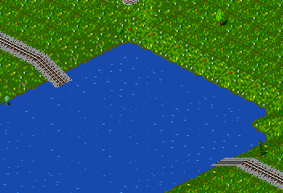
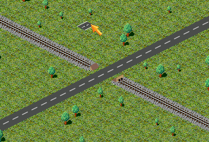
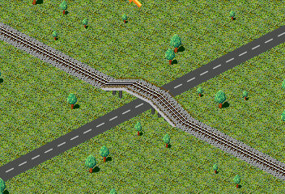

Um eine Brücke z.B. über eine kleine Wasserfläche zu bauen, reicht es auf jeder Seite die Schienen ein Stück den Hang hinunter zu führen und dann ein Schienenende mit dem Brückenbau Werkzeug anzuklicken.
|  |
|
Seit Version 0.80.0 kann man in Simutrans auch Brücken mit Auffahrten bauen. Die nächsten beiden Bilder illustrieren das Verfahren. Zuerst die Schiene (oder Straße) bauen und dann ein Ende mit dem Brückenbauwerkzeug anklicken:
|  |  |